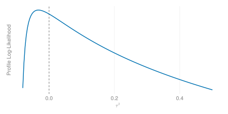
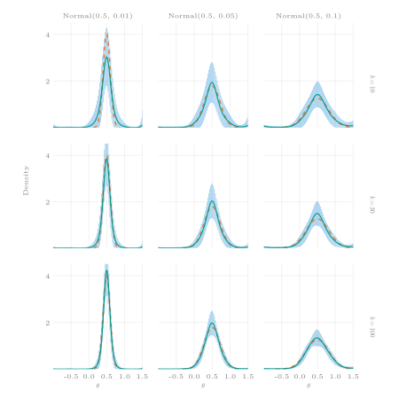
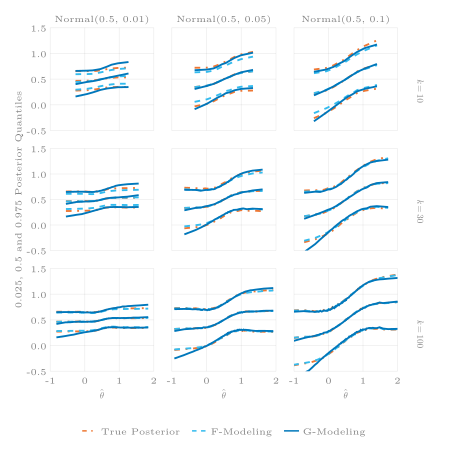
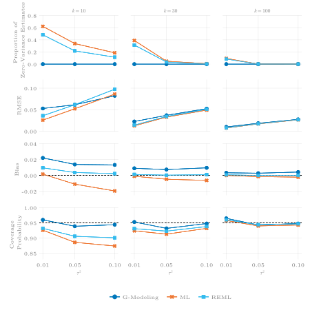

1 Introduction
Consider the following Bayes model (Lehmann and Casella 1998, 240) for \(n\in \mathbb{N}\) random variables, \(y_1,\ldots,y_n\in \mathbb{R}\):
\[ \begin{split} \text{I.}\quad &y_i|\theta_i \overset{\text{ind.}}{\sim} p_i(y_i|\theta_i) \\ \text{II.}\quad &\theta_i|\gamma \overset{\text{i.i.d}}{\sim} g(\theta_i|\gamma), \quad i = 1,\ldots,n. \end{split} \tag{1}\]
Each of the \(y_i\)’s is regarded as an independent draw from a known family of probability distributions with conditional density \(p_i(y_i|\theta_i)\) indexed by a parameter \(\theta_i\in \Theta \subseteq \mathbb{R}\). The parameter space \(\Theta\) is itself equipped with a probability distribution (i.e., the prior distribution) with density \(g(\theta|\gamma)\), indexed by a parameter \(\gamma\). The \(\theta_i\)’s (\(i = 1,\ldots,n\)) are independently and identically distributed according to \(g(\theta|\gamma)\). Collecting the \(y_i\)’s in a vector \(\boldsymbol{y} = (y_1,\ldots,y_n)\) and the \(\theta_i\)’s in a vector \(\boldsymbol{\theta} = (\theta_1,\ldots,\theta_n)\), the joint conditional density of \(\boldsymbol{y}\) and the joint density of \(\boldsymbol{\theta}\) will be denoted by \(p(\boldsymbol{y}|\boldsymbol{\theta}) = \prod_{i=1}^n p_i(y_i|\theta_i)\) and \(g(\boldsymbol{\theta}|\gamma) = \prod_{i=1}^n g(\theta|\gamma)\), respectively.
The primary goal is to infer about \(\boldsymbol{\theta}\) - the parameter (a vector) of interest. This is done through the posterior distribution,
\[ g(\boldsymbol{\theta}|\boldsymbol{y},\gamma) = \frac{p(\boldsymbol{y}|\boldsymbol{\theta})g(\boldsymbol{\theta}|\gamma)}{\int_{\Theta^n}p(\boldsymbol{y}|\theta)g(\boldsymbol{\theta}|\gamma) d\boldsymbol{\theta}} = \frac{p(\boldsymbol{y}|\boldsymbol{\theta})g(\boldsymbol{\theta}|\gamma)}{f(\boldsymbol{y}|\gamma)}. \tag{2}\]
It is straightforward to apply (2) once the Bayes model (1) has been fully specified, including the parameter \(\gamma\) of the prior distribution (or more generally, the prior distribution \(g\)). There are several strategies for specifying the prior distribution through a parameter \(\gamma\) in (1). Two of these are referred to as single-prior Bayes and empirical Bayes in Lehmann and Casella (1998, Ch. 5).
In single-prior Bayes, \(\gamma\) (and hence, the entire prior distribution \(g\)) is chosen by the analyst. For instance, if \(y_1,\ldots,y_n|\mu \overset{\text{i.i.d}}{\sim} \text{Normal}(\mu, \sigma^2)\), \(\sigma^2\in (0,\infty)\) known, one might choose a conjugate \(\text{Normal}(\mu_0,\sigma^2_0)\) prior for \(\mu\). Here, \(\gamma\) is a vector \((\mu_0,\sigma_0^2)\) and it is set to a particular value in \(\mathbb{R}\times (0,\infty)\) defined by the analyst a priori.
In empirical Bayes, \(\gamma\) is replaced by an estimate \(\hat \gamma\) obtained from the marginal distribution \(f(\boldsymbol{y}|\gamma)\). The maximum likelihood (ML) estimate of \(\gamma\) \[ \hat\gamma_{\text{ML}} = \arg\max_{\gamma} f(\boldsymbol{y}|\gamma) = \arg\max_{\gamma} \int_{\Theta^n} p(\boldsymbol{y}|\boldsymbol{\theta})g(\boldsymbol{\theta}|\gamma)d \boldsymbol{\theta} \] may be used, however \(\hat\gamma\) does not have to be ML-based.
The posterior of \(\boldsymbol{\theta}\) is then approximated by a plug-in version of (2): \[ g(\boldsymbol{\theta} | \boldsymbol{y}, \hat \gamma) = \frac{p(\boldsymbol{y}|\boldsymbol{\theta})g(\boldsymbol{\theta}|\hat\gamma)}{f(\boldsymbol{y}|\hat \gamma)}. \]
Within empirical Bayes, two different strategies can be distinguished: \(f\)-modeling and \(g\)-modeling (Efron 2014). The strategy described in the previous paragraph describes \(f\)-modeling; the prior density \(g\) is assumed to belong to a known parametric family of distributions indexed by a parameter \(\gamma\), while \(\hat \gamma\) is estimated from the marginal distribution \(f\) (hence the name \(f\)-modeling).
The second empirical Bayes strategy, \(g\)-modeling, is concerned with estimating the entire prior distribution through its density \(g\) from the data (hence the name \(g\)-modeling), making no parametric assumption in stage II. of (1). That is, stage II of the Bayes model is simply \(\theta_i \overset{\text{i.i.d}}{\sim} g\), where \(g\) denotes the density of a prior distribution for the \(\theta_i\)’s.
Letting \(\hat g\) denote the estimate of the prior density, the posterior is then given by \[ \hat g(\boldsymbol{\theta}|\boldsymbol{y}) = \frac{p(\boldsymbol{\theta}|\boldsymbol{y})\hat g(\boldsymbol{\theta})}{f(\boldsymbol{y})} = \frac{p(\boldsymbol{\theta}|\boldsymbol{y})\hat g(\boldsymbol{\theta})}{\int_{\Theta^n} p(\boldsymbol{\theta}|\boldsymbol{y})\hat g(\boldsymbol{\theta})d\boldsymbol{\theta}}. \]
Unfortunately, this non-parametric ideal version of \(g\)-modeling is practically infeasible as convergence rates of \(\hat g\) to \(g\) are poor (Carroll and Hall 1988; Narasimhan and Efron 2020). The \(g\)-modeling approach considered here and in e.g., Chapter 21 of Efron and Hastie (2016) may be described as a compromise between a fully non-parametric strategy and \(f\)-modeling: The prior \(g\) is assumed to belong to the exponential family of distributions indexed by a parameter \(\alpha\) (further details are given in Section 2.1 below). This restriction on \(g\) allows for efficient estimation as shown by Efron (2016).
Examples of applications of the exponential-family-based parametric version of \(g\)-modeling (from here on simply referred to as \(g\)-modeling) to real-world data can be found in Efron (2014), Efron (2016), Efron and Hastie (Efron and Hastie 2016, Ch. 21) and Narasimhan and Efron (2020). They encompass applications of \(g\)-modeling to problems such as estimating the number of words in William Shakespeare’s vocabulary, the number of yet to be observed species of butterflies, the proportion of cancerous lymph nodes, or the mean differences of thousands of genes between two groups . These examples all share a defining feature: they encompass relatively large data sets with multiple parallel estimation problems posed at once. For instance, estimating the proportion of cancerous nodes for each individual in a sample of size \(n\) amounts to \(n\) parallel estimation problems.
Parallel estimation problems also occur whenever a researcher conducts a meta-analysis (although meta-analyses are usually not framed in that way). In a meta-analysis, individual estimates of an effect of interest obtained over the course of multiple studies are combined in order to achieve an overall ‘better’ estimate of said effect. In addition, the combined information in the collection of individual study estimates can also be used to obtain ‘better’ estimates for each of the effects underlying the individual studies, which describes a parallel estimation problem. Moreover, empirical Bayes meta-analyses derived from the \(f\)-modeling strategy have been around for decades (Raudenbush and Bryk 1985). It thus seems natural to extend the list of potential areas of applications of \(g\)-modeling and assess its usefulness in the context of meta-analyses.
The sections below are structured as follows: Section 2.1 and Section 2.2 provide condensed accounts of the technical details underlying \(g\)-modeling and classical meta-analytic methods employing maximum-likelihood (ML) and restricted-maximum-likelihood (REML) estimation, resepectively. In Section 2.4 an approach to meta-analysis based on \(g\)-modeling is developed. In Section 3 the \(g\)-modeling meta-analysis is compared to ML- and REML-based meta-analysis in a simulation study.
2 Statistical Framework
2.1 G-Modeling theory
This section briefly summarizes a number of results required to be able to apply \(g\)-modeling to meta-analysis below. More comprehensive accounts can be found in Efron Efron (2016), Efron (2014), Efron and Hastie (2016, Ch. 21), and Narasimhan and Efron (2020).
Suppose we have \(n\) independent observations \(y_1,\ldots,y_n\) generated by the Bayes model (1). Marginally, this implies
\[ y_i \sim f_i(y_i) = \int_{\Theta} p_i(y_i|\theta) g(\theta)d\theta, \quad i = 1,\ldots,n. \tag{3}\]
The researcher observes \(\boldsymbol{y} = (y_1,\ldots,y_n)\) from the joint marginal density \(\boldsymbol{f} = \prod_{i=1}^n f_i\). The task is to estimate the prior density \(g\) from the sample \(\boldsymbol{y}\), which may be described as deconvolving \(\boldsymbol{f}\), hence, the estimate \(\hat g\) of \(g\) is also referred to as a deconvolution estimate (e.g., Efron 2016).
For convenience, we may assume that \(g\) sits on a finite subset of \(\mathbb{R}\); that is, the parameter space is given by \(\Theta = \{t_1,\ldots, t_m\}\), \(t_j \in \mathbb{R}, j = 1,\ldots,m\) (see Efron 2014 for a description of the continuous case). Moreover, \(g\) is restricted to the exponential family of distributions :
\[ g(\theta|\boldsymbol{\alpha}) = \exp\bigg\{\boldsymbol{S}(\theta)^\top \boldsymbol{\alpha} - \phi(\boldsymbol{\alpha})\bigg\}, \tag{4}\]
where \(\mathbf{S}: \Theta \to \mathbb{R}^{p}\) denotes the sufficient statistic, \(\boldsymbol{\alpha}\in \mathbb{R}^p\) the natural parameter and \(\phi(\boldsymbol{\alpha}) = \log\big(\sum_{j=1}^m \exp\{\boldsymbol{S}(t_j)^\top \boldsymbol{\alpha}\}\big)\) a constant, ensuring that \(g(\theta|\boldsymbol{\alpha})\) sums to 1.
With \(\Theta\) being a finite set, we can evaluate \(\boldsymbol{S}\) at every point \(t_j \in \Theta\) and assemble the resulting \(m\) vectors, each containing \(p\) elements, in what is called a structure matrix \(\boldsymbol{Q}\in \mathbb{R}^{m\times p}\),
\[ \boldsymbol{Q} = \begin{bmatrix} \boldsymbol{S}(t_1)^\top \\ \vdots\\ \boldsymbol{S}(t_m)^\top \end{bmatrix} = \begin{bmatrix} S(t_1)_1&\ldots& S(t_1)_p \\ \vdots & \ddots &\vdots\\ S(t_m)_1&\ldots& S(t_m)_p \\ \end{bmatrix}. \]
The structure matrix will prove helpful in the derivation of the log-likelihood, the observed Fisher information, the bias and the variance, below. It is convenient to express the prior distribution in (4) for \(\theta\) evaluated at some point \(t_j\) in terms of the structure matrix \(\boldsymbol{Q}\)
\[ \begin{split} g_j(\boldsymbol{\alpha}) = g(t_j|\boldsymbol{\alpha}) = \exp\bigg\{\boldsymbol{Q}_j^\top\boldsymbol{\alpha} - \phi(\boldsymbol{\alpha})\bigg\}, \quad j = 1,\ldots,m\\ \phi(\boldsymbol{\alpha}) = \log\bigg(\sum_{j = 1}^m e^{ \boldsymbol{Q}_j^\top(\boldsymbol{\alpha})}\bigg), \end{split} \tag{5}\]
where \(\boldsymbol{Q}_j^\top\) denotes the \(j\)th row of \(\boldsymbol{Q}\).
In theory, one is free to choose the function \(\boldsymbol{S}\) and hence the structure matrix \(\boldsymbol{Q}\) as one sees fit. A common choice for \(\boldsymbol{S}\) (e.g., Efron 2014) is
\[ \boldsymbol{S}(t_j) = (1, \psi_1(t_j), \ldots, \ldots\psi_{p-1}(t_j))^\top, \]
where \(\psi_k, k =1,\ldots p-1\) denote basis functions for a natural cubic spline, with \(p-1\) degrees of freedom returned by the R function splines::ns(x = Θ, df = p-1). In this example, splines::ns is supplied with a vector containing the parameter space \(\Theta\) as its first argument and determines a sequence of \(p\in \mathbb{N}\) knots (supplied via the argument df), \(t_1 = \tau_1 < \tau_2 < \ldots < \tau_p = t_m\), from the elements in \(\Theta\). The interior knots (\(\tau_2,\ldots,\tau_{p-1}\)) are chosen at uniform quantiles of \(\Theta\). R maps each point \(t_j\in \Theta\) to a \(p-1\) row vector of natural cubic spline basis functions \(\psi_1(t_j), \ldots,\psi_{p-1}(t_j)\) and collects these row vectors in a matrix, \(\boldsymbol{A}\in \mathbb{R}^{m\times (p-1)}\). Adding a column of \(1\)’s to \(\boldsymbol{A}\) yields the structure matrix \(\boldsymbol{Q}\). Consequently, the scalar \(\boldsymbol{Q}^\top_j \boldsymbol{\alpha}\) in the exponent of (5) is the value of a natural cubic spline that approximates the unnormalized log-density of the prior, at the point \(t_j\). These approximations are obtained for every \(t_j\in \Theta\). The pairs \((t_1, \boldsymbol{Q}_1^\top \boldsymbol{\alpha}), \ldots, (t_m, \boldsymbol{Q}_m^\top \boldsymbol{\alpha})\) represent an approximation of the unnormalized log-prior density. The unknown \(\boldsymbol{\alpha}\in \mathbb{R}^p\) is estimated from the data.
The assumption of a discrete and finite sample space \(\Theta\) allows for the representation of the prior density \(g\) as a vector \(\boldsymbol{g} = (g_1(\boldsymbol{\alpha}),\ldots, g_m(\boldsymbol{\alpha}))^\top\). The marginal density \(f_i\) for the \(i\)th observation is thus (by analogy to (3))
\[ y_i \sim f_i = f_i(y_i) = \sum_{j=1}^m p_i(y_i|\theta_i = t_j) g_j(\boldsymbol{\alpha}). \tag{6}\]
To further simplify the notation, define
\[ p_{ij} := p_i(y_i|\theta_i = t_j) \tag{7}\]
and let \(\boldsymbol{P} = (p_{ij})_{1\leq i \leq n, 1\leq j \leq m}\) be a \(n\times m\) matrix, where the \(i\)th row is given by \((p_{i1},\ldots,p_{im})\). The vector of marginal densities \(\boldsymbol{f} = (f_1,\ldots,f_n)^\top\) can thus be represented concisely using matrix multiplication
\[ \boldsymbol{f} = \boldsymbol{Pg}. \tag{8}\]
Since the \(n\) observations are assumed to be independent, the (joint) log-likelihood is
\[ l(\boldsymbol{\alpha}) = \sum_{i = 1}^n \log f_i = \sum_{i=1}^n \log \boldsymbol{P}_i^t \boldsymbol{g(\alpha)} \]
where \(\boldsymbol{P}_i^t\) denotes the \(i\)th row of \(\boldsymbol{P}\).
Let \(\boldsymbol{W}_i(\boldsymbol{\alpha}) = \big(g_1(p_{i1}/f_i - 1),\ldots, g_m (p_{im}/f_i - 1) \big)^\top\). The score function and observed Fisher information matrix are given by
\[ \dot{l}(\boldsymbol{\alpha}) = \boldsymbol{Q}^\top \sum_{i=1}^n \boldsymbol{W}_i(\boldsymbol{\alpha})=: \boldsymbol{Q}^\top\boldsymbol{W}_+(\boldsymbol{\alpha}) \tag{9}\]
and
\[ \begin{split} I(\boldsymbol{\alpha}) &= - \frac{\partial \dot{l}(\boldsymbol{\alpha})}{\partial \boldsymbol{\alpha}^\top}\\ &= \boldsymbol{Q}^\top \bigg(\sum_{i=1}^n \boldsymbol{W}_i(\boldsymbol{\alpha})\boldsymbol{W}_i(\boldsymbol{\hat\alpha})^\top + \boldsymbol{W}_+(\boldsymbol{\alpha})\boldsymbol{g(\alpha)}^\top + \boldsymbol{g(\alpha)}\boldsymbol{W}_+(\boldsymbol{\alpha})^\top \\ &\quad - \text{diag}\{\boldsymbol{W}_+(\boldsymbol{\alpha})\}\bigg)\boldsymbol{Q}, \end{split} \tag{10}\]
respectively (see Efron (2016) for a proof).
In estimating \(\boldsymbol{\alpha}\), regularization is needed (Efron 2016). To this end, the penalized log-likelihood with penalty term \(s(\boldsymbol{\alpha})\)
\[ l_{\text{pen.}}(\boldsymbol{\alpha}) = l(\boldsymbol{\alpha}) - s(\boldsymbol{\alpha}) \]
is maximized rather than the log-likelihood function, \(l(\boldsymbol{\alpha})\). Efron (2016) and Efron and Hastie (2016) use the following penalty:
\[ s(\boldsymbol{\alpha}) = c_0||\boldsymbol{\alpha}|| = c_0\bigg(\sum_{l=1}^p \alpha_l^2\bigg)^{1/2}, \quad c_0 > 0, \tag{11}\]
where \(c_0\) is a user-defined penalty factor.
The penalty introduces bias (but decreases variance) by drawing \(\boldsymbol{\hat\alpha}\) towards the origin and thus \(\boldsymbol{\hat g} = \boldsymbol{g}(\boldsymbol{\hat \alpha})\) towards a flat prior as \(c_0\) increases.
The gradient of \(s(\boldsymbol{\alpha})\) is given by
\[ \dot{s}(\boldsymbol{\alpha}) = \frac{\partial s(\boldsymbol{\alpha})}{\partial \boldsymbol{\alpha}} = c_0\frac{1}{2}\frac{1}{||\boldsymbol{\alpha}||} 2 \boldsymbol{\alpha} = \frac{c_0}{||\boldsymbol{\alpha}||}\boldsymbol{\alpha}. \tag{12}\]
The Hessian matrix is
\[ \ddot{s}(\boldsymbol{\alpha}) = \bigg(\frac{\partial^2 s}{\partial \alpha_l\partial \alpha_j}\bigg) = \frac{c_0}{||\boldsymbol{\alpha}||}\bigg(\boldsymbol{I}-\frac{\boldsymbol{\alpha}\boldsymbol{\alpha}^t}{||\boldsymbol{\alpha}||^2}\bigg). \tag{13}\]
The penalized log-likelihood \(l_{\text{pen.}}\) and its gradient \(\dot l_{\text{pen.}}(\boldsymbol{\alpha}) = \dot{l}(\boldsymbol{\alpha}) - \dot{s}(\boldsymbol{\alpha})\) are needed to find the maximizer \(\boldsymbol{\hat \alpha}\) of \(l_{\text{pen.}}\) numerically in the implementation of \(g\)-modeling in the simulation study below Section 3.
The bias vector of the maximizer \(\boldsymbol{\hat\alpha}\) of \(l_\text{pen.}\) can be estimated using (Efron 2016)
\[ \text{Bias}(\boldsymbol{\hat\alpha}) = - \{I(\boldsymbol{\alpha})+\ddot{s}(\boldsymbol{\hat\alpha})\}^{-1}\dot{s}(\boldsymbol{\hat\alpha}). \tag{14}\]
Plugging \(\boldsymbol{\hat\alpha}\) into (5) yields the estimate \(\boldsymbol{\hat g} = (g_1(\boldsymbol{\hat\alpha}), \ldots, g_m(\boldsymbol{\hat\alpha})) = (\hat g_1,\ldots,\hat g_m)\) for the prior \(\boldsymbol{g}\). An estimate of the bias of \(\boldsymbol{\hat g}\) is given by (see Efron 2016; Efron and Hastie 2016, 443)
\[ \begin{split} \text{Bias}(\boldsymbol{\hat g}) &= \boldsymbol{D}(\boldsymbol{\hat\alpha}) \boldsymbol{Q}\text{Bias}(\boldsymbol{\hat \alpha}), \\ &\text{where } \boldsymbol{D}(\boldsymbol{\hat\alpha}) = \text{diag}\{\boldsymbol{g(\hat\alpha)}\} - \boldsymbol{g}(\boldsymbol{\hat \alpha}) \boldsymbol{g}(\boldsymbol{\hat\alpha}) ^\top. \end{split} \tag{15}\]
Equations (14) and (15) provide the reason for presenting the observed Fisher information matrix (10), the gradient and the Hessian of the penalty term \(s(\boldsymbol{\alpha})\) in this section: these quantities can be used to estimate, and thus mitigate, the bias incurred by penalizing the log-likelihood.
2.2 Meta-Analysis
A meta-analysis comprises a number \(k \in \mathbb{N}\) of different studies, each on approximately the same substantive research question of interest. For instance, there may be \(k\) studies on the efficacy of a new drug. Let \(\theta_i\) denote the true mean difference in the outcome variable (e.g., blood pressure) between a control and a placebo group in study \(i = 1,\ldots,k\). Each study \(i\) gives rise to an estimate \(\hat \theta_i\) of \(\theta_i\), which is assumed normal with mean \(\theta_i\) and known variance \(\sigma^2_i\). If - as is usually the case - the true \(\sigma^2_i\)’s are not known, the sample estimates, \(\hat\sigma^2_i\)’s, are used instead. This setting describes the so-called normal random-effects model of meta-analysis (e.g., Higgins, Thompson, and Spiegelhalter 2009), often expressed in the following hierarchical form:
\[ \begin{split} \text{I.}\quad&\hat\theta_i|\theta_i \overset{\text{ind}}{\sim} \text{Normal}(\theta_i, \sigma^2_i)\\ \text{II.}\quad&\theta_i|\mu,\tau^2 \overset{\text{i.i.d.}}{\sim} \text{Normal}(\mu, \tau^2), \quad i = 1,\ldots,k. \end{split} \tag{16}\]
Clearly, (16) is a Bayes model (1) specifying a normal prior on the true study effects.
In many applications, the primary goal of a meta-analysis is to estimate \(\mu\), the so-called average (treatment) effect, with \(\tau^2\) and the \(\theta_i\)’s being treated as nuisance parameters. The variability in the true study effects \(\theta_i\) implied by the variance parameter \(\tau^2\) in stage I. of (16) is also referred to as effect-size heterogeneity or simply heterogeneity.
To derive estimators for \(\mu,\tau^2\), and \(\theta_1,\ldots,\theta_k\) from the collection of \(k\) studies, note that the normal random effects model (16) is just a special case of a linear-mixed model:
\[ \boldsymbol{y} = \boldsymbol{X} \boldsymbol{\beta} + \boldsymbol{Z} \boldsymbol{\eta} + \boldsymbol{\varepsilon}, \tag{17}\]
where \(\boldsymbol{y}\) is a \(k\)-vector of random response variables, \(\boldsymbol{X}\) a \(k\times p\) matrix of known regressors, \(\boldsymbol{\beta}\) a \(p\)-vector of fixed effects, \(\boldsymbol{Z}\) a \(k\times q\) design matrix for the random effects contained in the \(q\)-vector \(\boldsymbol{\eta}\) and \(\boldsymbol{\varepsilon}\) a \(k\)-vector of random error terms. Furthermore, it is assumed that \(\mathbb{E}[\boldsymbol{\eta}] = \mathbf{0}_k\), \(\mathbb{E}[\boldsymbol{\varepsilon}] = \mathbf{0}_q\), and that the variance-covariance matrix is given by
\[
\mathbb{C}\text{ov}[( \boldsymbol{\eta},\boldsymbol{\varepsilon})^\top] = \begin{bmatrix}
\boldsymbol{G} & \mathbf{0}_{q\times n} \\
\mathbf{0}_{n\times q} & \boldsymbol{R}
\end{bmatrix},
\] where \(\boldsymbol{G} = \mathbb{C}\text{ov}[\boldsymbol{\eta}]\) and \(\boldsymbol{R} = \mathbb{C}\text{ov}[\boldsymbol{\varepsilon}]\) denote the variance-covariance matrices of \(\boldsymbol{\eta}\) and \(\boldsymbol{\varepsilon}\), respectively. It then follows that \(\mathbb{E}[\boldsymbol{y}] = \boldsymbol{X}\boldsymbol{\beta}\) and that \(\mathbb{C}\text{ov}[\boldsymbol{y}] = \boldsymbol{Z}\boldsymbol{G}\boldsymbol{Z}^\top + \boldsymbol{R}\). Assuming normality for \(\boldsymbol{\eta}\) and \(\boldsymbol{\varepsilon}\), we have \[
\boldsymbol{y} \sim \text{Normal}_k(\mathbf{X}\boldsymbol{\beta}, \boldsymbol{ZGZ}^\top + \boldsymbol{R}).
\] Building on these assumption, the linear-mixed model representation of the normal random-effects meta-analytic model (16) is obtained by setting
\[\begin{align*} &\boldsymbol{y} = \boldsymbol{\hat\theta} = (\hat\theta_1,\ldots,\hat\theta_k),\enspace & \mathbf{X} = \mathbf{1}_k = (1,\ldots,1)^\top \in \mathbb{R}^k, \quad &\boldsymbol{\beta} = \mu\in \mathbb{R}, \\ &\mathbf{Z} = \mathbf{I}_k, \quad & \boldsymbol{\eta} = (\theta_1 - \mu, \ldots, \theta_k - \mu)^\top, \quad &\mathbf{G} = \text{diag}\{\tau^2,\ldots,\tau^2\}, \\ & \boldsymbol{R} = \text{diag}\{\sigma_1^2,\ldots,\sigma_k^2\}, \end{align*}\]
which yields
\[ \boldsymbol{\hat\theta} = \mathbf{1}_k \mu + \mathbf{I}_k \boldsymbol{\eta} + \boldsymbol{\varepsilon}. \tag{18}\]
As an immediate consequence, the marginal distributions of the \(\hat\theta_i\)’s are normal: \[ \hat \theta_i \overset{\text{ind.}}{\sim} \text{Normal}(\mu, \sigma^2_i + \tau^2), \quad i =1,\ldots,k. \]
The joint log-likelihood of \(\hat\theta_1,\ldots,\hat \theta_n\) is
\[ l(\mu,\tau^2) \propto -\frac{1}{2} \sum_{i=1}^k \log(\sigma^2_i + \tau^2) - \frac{1}{2} \sum_{i=1}^k \frac{(\hat \theta_i - \mu)^2}{\sigma_i^2 + \tau^2}. \tag{19}\]
Maximization of (19) with respect to the parameter vector \((\mu, \tau^2)\) can be achieved by profiling. For \(\tau^2\) fixed, the maximizer of \(\mu\) is obtained by setting the derivative of (19) with respect to \(\mu\) equal to zero and solving for \(\mu\). This gives the estimator
\[ \begin{split} \hat \mu = \hat \mu(\tau^2) &= \frac{\sum_{i=1}^k w_i\hat \theta_i}{\sum_{j = 1}^k w_i}, \\ &\text{for } w_i = (\sigma^2_i+\tau^2)^{-1}. \end{split} \tag{20}\]
Replacing \(\mu\) in (19) by the function \(\hat\mu(\tau^2)\) (20) (\(\tau^2\) is no longer assumed fixed) yields the profile log-likelihood for \(\tau^2\), denoted by \(l_p\).
The maximum likelihood estimate \(\hat \tau^2_{\text{ML}}\) for \(\tau^2\) satisfies
\[ \begin{split} l_p'(\tau^2_{\text{ML}}) = \frac{\partial l_p(\tau^2)}{\partial \tau^2}\bigg\rvert_{\tau^2 = \hat \tau^2_{\text{ML}}} = -\frac{1}{2}\sum_{i=1}^k w_i + \frac{1}{2} \sum_{i=1}^k \frac{2(\hat\theta_i-\hat\mu(\tau^2))\hat \mu'(\tau^2)w_i^{-1}-(\hat\theta_i-\hat \mu)^2}{w_i^{-2}} \overset{!}{=} 0, \\ \text{where } \hat\mu'(\tau^2) = -\frac{\sum_{i=1}^k w_i\hat\theta_i}{\sum_{i=1}^k w_i} + \frac{\sum_{i=1}^k w_i^2\cdot\sum_{i=1}^k w_i\hat\theta_i}{\big(\sum_{i=1}^k w_i\big)^2} \end{split} \tag{21}\]
The solution \(\hat\tau^2_{\text{ML}}\) to (21) is found numerically. The maximum likelihood estimate \(\hat\mu_{\text{ML}}\) for \(\mu\) is then given by plugging \(\hat\tau^2_{\text{ML}}\) into (20), \[ \hat\mu_{\text{ML}} = \hat\mu_{\text{ML}}(\hat\tau^2_{\text{ML}}). \]
It may happen that solutions of \(\tau^2_{\text{ML}}\) in 21 converge to values outside the parameter space for \(\tau^2\), namely \(\tau^2 < 0\) (i.e., we would estimate the variance to be negative; see Figure 1 for an illustration).
It is common practice to set the maximum likelihood estimate of \(\tau^2\) equal to \(0\) when the maximizer of the profile log-likelihood is located outside of the parameter space. Thus, a truncated version the maximum likelihood estimate for \(\tau^2\) given by
\[ \hat \tau^2_{\text{ML}} = \max\{\hat\tau^2_{\text{ML}}, 0\}. \tag{22}\]
is actually used. These so-called zero-variance estimates (i.e., \(\hat\tau^2_{\text{ML}} = 0\)) occur rather frequently in practice.
It is well known that \(\hat\tau^2_{\text{ML}}\) has negative bias for \(\tau^2\) in finite samples, due to the loss in the degrees of freedom incurred by replacing \(\mu\) in the profile likelihood (21) with its estimate \(\hat\mu\) (Viechtbauer 2005; Harville 1977). To correct for this bias, the restricted log-likelihood function \(l_R(\mu,\tau^2)\) may be maximized instead of the log-likelihood (19). This is equivalent to maximizing the following function:
\[ h(\mu,\tau^2) = l(\mu, \tau^2) - \frac{1}{2} \log\sum_{i=1}^k (\sigma^2_i + \tau^2)^{-1}. \]
The profile version of \(h(\mu, \tau^2)\) is
\[ h_p(\tau^2) = l_p(\tau^2) - \frac{1}{2} \log\sum_{i=1}^k (\sigma^2_i + \tau^2)^{-1}, \]
satisfying
\[ h_p'(\hat\tau^2_{\text{REML}}) = l_p'(\tau^2_{\text{REML}}) - \frac{1}{2}\frac{\partial }{\partial \tau^2}\log\sum_{i=1}^k (\sigma_i^2 + \tau^2)^{-1} = 0, \tag{23}\]
where \(\tau^2_{\text{REML}}\) denotes the restricted-maximum-likelihood (REML) estimate for \(\tau^2\).
Again, the solution \(\hat\tau^2_{\text{REML}}\) to (23) is found numerically with the constraint that \(\hat\tau^2_{\text{REML}}\) is truncated to \(0\) if the solutions converge to values of \(\tau^2 < 0\). The resulting REML estimator for \(\mu\) is given by
\[ \hat\mu_{\text{REML}} := \hat\mu(\hat\tau^2_{\text{REML}}). \tag{24}\]
For \(\tau^2\) known, the variance of \(\hat\mu(\tau^2)\) in (20) is given by
\[ \mathbb{V}\text{ar}[\hat\mu(\tau^2)] = \frac{1}{\sum_{i=1}^n (\sigma^2_i + \tau^2)^{-1}}. \tag{25}\]
Commonly employed estimators of the variances of \(\hat\mu_{\text{ML}}\) and \(\hat\mu_{\text{REML}}\) are given by
\[ \mathbb{\hat V}\text{ar}[\hat\mu_{\text{ML}}] = \mathbb{V}\text{ar}[\hat\mu(\tau^2_{\text{ML}})] \quad \text{ and } \quad \mathbb{\hat V}\text{ar}[\hat\mu_{\text{ML}}] = \mathbb{V}\text{ar}[\hat\mu(\tau^2_{\text{REML}})]. \tag{26}\]
The estimator \(\hat \mu\) in (20) and its variance \(\mathbb{V}\text{ar}[\hat\mu]\) are used to construct \((1-\alpha)\%\) Wald-type confidence intervals (CI) for \(\mu\) based on a normal approximation of the distribution of \(\hat \mu\). The general form of a Wald-type CI (for \(\tau^2\) fixed) is given by
\[ \hat \mu(\tau^2) \pm z_{1-\alpha/2}\sqrt{\mathbb{V}\text{ar}[\hat \mu(\tau^2)]}, \tag{27}\]
where \(z_{1-\alpha/2}\) denotes the \((1-\alpha)\)-quantile of the standard normal distribution. In applications, confidence intervals are obtained by plugging \(\tau^2_{\text{ML}}\) or \(\tau^2_{\text{REML}}\) into (27), depending on the method used for estimating \(\tau^2\).
2.3 \(F\)-Modeling posterior inference
If \(\mu\) and \(\tau^2\) are known, stage II. of the Bayes model (16) could be interpreted as a normal single-prior distribution for each of the \(\theta_i\). The sampling distribution of the \(\hat\theta_i\) is also normal. Thus, by conjugacy, the posterior distribution for \(\theta_i\) is
\[ \begin{split} \theta_i|\hat\theta_i, \mu, \tau^2 &\sim \text{Normal}(\tilde\theta_i, V), \\ \text{for } V = \bigg\{\frac{1}{\sigma^2_i}+\frac{1}{\tau^2}\bigg\}^{-1} &\text{ and } \tilde\theta_i = V \bigg\{\frac{\hat\theta_i}{\sigma_i^2} + \frac{\mu}{\tau^2}\bigg\}. \end{split} \tag{28}\]
The posterior in (28) serves as the starting point for any inferences about the individual \(\theta_i\)’s, e.g., by way of \((1-\alpha)\%\) (\(\alpha\in (0,1)\)) credible intervals constructed from posterior quantiles. Thus meta-analysis naturally gives rise to \(k\) parallel estimation problems (one for each \(\theta_i, i = 1,\ldots,k\)).
In the \(f\)-modeling strategy to empirical Bayes, posterior distributions for the \(\theta_i\)’s are obtained by replacing \(\mu\) and \(\tau^2\) in (28) by estimates \(\hat\mu\) and \(\hat\tau^2\). Both the ML- and REML-estimates are suitable choices.
2.4 \(G\)-Modeling meta-analysis
The \(g\)-modeling equivalent of the Bayes model (16) is given by
\[
\begin{split}
\text{I.}\quad&\hat\theta_i|\theta_i \overset{\text{ind}}{\sim} \text{Normal}(\theta_i, \sigma^2_i)\\
\text{II.}\quad&\theta_i|\boldsymbol{\alpha} \overset{\text{i.i.d.}}{\sim} \boldsymbol{g}(\boldsymbol{\alpha}), \quad i = 1,\ldots,k,
\end{split}
\tag{29}\]
for \(\boldsymbol{g}(\boldsymbol{\alpha}) = (g_1(\boldsymbol{\alpha}),\ldots, g_m(\boldsymbol{\alpha}))\) and \((\boldsymbol{\alpha})\) an exponential family density as in (5).
The conditional density \(p_{ij}\) in (7) which the observations in stage I. of (29) are drawn from now denotes the density of a normal distribution, \(\text{Normal}(\theta_i, \sigma^2_i)\).
An estimate \(\boldsymbol{\hat g}\) of \(\boldsymbol{g}\) is obtained as described in Section 2.1. Note that \(\boldsymbol{\hat g}\) is a (counting) density by construction. The prior expectation and variance of \(\theta_1\) (assuming that they exist) under \(\boldsymbol{\hat g}\) are thus given by
\[ \mu_{\hat g} = \mathbb{E}[\theta_1] = \sum_{j=1}^m t_j \hat g_j \quad \text{and}\quad \tau_{\hat g}^2 = \mathbb{V}\text{ar}[\theta_1] = \sum_{j = 1}^m (t_j-\mu_{\hat g})^2 \hat g_j, \tag{30}\]
and may be regarded as estimators for \(\mu\) and \(\tau^2\), the average (treatment) effect and its variance (note that since the \(\theta_i\) are i.i.d. the expectation and variance of every \(\theta_i\) are equal to those of \(\theta_1\)).
Obvious defects of \(\mu_{\hat g}\) and \(\tau_{\hat g}^2\) as estimators for \(\mu\) and \(\tau^2\) are the apparent lack of analytic expressions for their variances. Theoretically, the bootstrap could be employed as a method for estimating the variances of \(\mu_{\hat g}\) and \(\tau_{\hat g}^2\) as well as for constructing confidence intervals. However, evaluating statistical properties such as bias, MSE and coverage probabilities of these boot-strapped estimates turned out to be computationally infeasible (at least to the author of this report) due to the large number of required simulations.
We can nevertheless mimic the construction of a Wald-type CI by plugging \(\tau^2_{\hat g}\) into the general form given by (27). The coverage probability of the resulting interval estimator can then be assessed in simulations, as is done below.
2.5 \(G\)-Modeling posterior inference
The posterior probabilities for each event \(\{\theta_i = t_j: i = 1,\ldots,k, j = 1,\ldots,m\}\) based on the corresponding observation \(\hat \theta_i\) are obtained via Bayes’ rule,
\[ \hat g_{ij} = \mathbb{P}\{\theta_i = t_j|\hat\theta_i\} = \frac{p_{ij}\hat g_j}{\sum_{j = 1}^k p_{ij}\hat g_j},\quad j = 1,\ldots,m. \tag{31}\]
The entire posterior density for an individual \(\theta_i\) can thus be represented as a vector
\[ \boldsymbol{\hat g}_i = (\hat g_{i1},\ldots, \hat g_{im})^\top. \tag{32}\]
Once the posterior \(\boldsymbol{\hat g}_i\) is obtained, it is straightforward to generate random samples from it and compute posterior quantiles, thus allowing for the construction of credible intervals for each \(\theta_i\).
3 Simulation study
3.1 Study goals
The goal of the simulation study is to apply the \(g\)-modeling meta-analysis developed in Section 2.4 and compare its performance to the classical approaches based on ML- and REML-estimation across several scenarios.
The study follows Chung, Rabe-Hesketh, and Choi (2013) in several regards. The three meta-analytic estimation strategies are compared with respect to the following properties: The proportion of zero-variance estimates (i.e., \(\hat \tau^2 = 0\)), the MSE (or RMSE) and the bias of \(\hat\tau^2_{\text{ML}}, \hat \tau^2_{\text{REML}}\) and \(\tau^2_{\hat g}\), as well as the coverage probabilities of the 95% Wald-type CI’s for \(\mu\) obtained by plugging these different estimators for \(\tau^2\) into (27). No explicit rationale for using MSE (or RMSE), bias and coverage probabilities seems necessary as these are universally accepted as sensible quantities for evaluating estimators.
However, the proportion of zero-variance estimates as a reasonable property with respect to which estimators for \(\tau^2\) can be compared seems to require some further justification. Section 2.2 briefly touched on the issue of zero-variance estimates which frequently occur in both ML- and REML-applications. An estimate of \(\hat\tau^2_{\text{ML}} = 0\) appears to be in conflict with the intuitive interpretation of stage II. in (16): by assuming model (16), a researcher expects variability in the true study effects \(\theta_1,\ldots,\theta_k\). Claiming \(\hat\tau^2 = 0\) is equivalent to claiming that there is no variability in the study effects and that one and the same true effect generated the observable \(\hat\theta_i\) in the \(k\) studies, each usually conducted at a different time, in a different place, by a different group of researchers, etc. Against this backdrop of variable situational factors, the stance that it is reasonable to model the observations from different studies as having been generated by one and the same true effect appears objectionable on scientific grounds (For completeness, the objectionable assumption is called the fixed- or common-effect assumption in the literature and it would provide for an alternative model to (16)). Therefore, it may be considered desirable that estimators for \(\tau^2\) avoid zero-variance estimates for \(\tau^2\). The estimator \(\tau^2_{\hat g}\) achieves this by construction (precluding the case \(\hat g_j = 0\) for every \(j = 1,\ldots,m\)).
3.1.1 Study Design
The study design draws on Chung, Rabe-Hesketh, and Choi (2013) Brockwell and Gordon (2001). For each number of studies \(k\in \{10, 30, 100\}\) in a meta-analysis, \(k\) true study-level effects \(\theta_1,\ldots,\theta_k\) were drawn from a \(\text{Normal}(\mu = 0.5, \tau^2)\) distribution, \(\tau^2 \in \{0.01, 0.05, 0.1\}\). For each \(\theta_i\) an observation \(\hat\theta_i\) was drawn from a normal distribution with mean \(\theta_i\) and variance \(\sigma^2_i\) drawn from a \(0.25\cdot\chi^2(1)\) distribution truncated at \(0.009\) below and \(0.6\) above. The truncated \(\chi^2\)-distribution for the \(\sigma_i^2\) was first used by Brockwell and Gordon (2001) due to its
apparent ‘consistency’ with the distribution of sample variances of empirical log-odds ratios. One can thus think of the simulated \(\theta_i\)’s as true log-odds ratios and the \(\hat\theta_i\)’s as sample estimates with variances equal to the simulated \(\sigma_i^2\). Log-odds ratios (or odds ratios) are ubiquitous in medical research.
For each combination of \(k\) and \(\tau^2\), 1,000 replications of the simulation were carried out. The normal random effects model (16) was fit to each replication using both ML- and REML-estimation as described in Section 2.2. The \(g\)-modeling equivalent given by 29 was fit as described in Section 2.4 with the following specifications: \(\Theta\) was given by discretizing the interval between \(-1\) and \(1.5\) into 100 equally spaced points; i.e., \(\Theta = \{-1,-0.974,\ldots, 1.5 \}\).
The structure matrix \(\boldsymbol{Q}\) was obtained as described in Section 2.1. In particular, a matrix of natural cubic spline bases with 5 degrees of freedom for the points in \(\Theta\) was augmented by a column of \(1\)’s, resulting in a \(100\times 6\) structure matrix \(\boldsymbol{Q}\). This is the default approach used in the R package Narasimhan and Efron (2020), which was specifically developed for the \(g\)-modeling approach outlined in Section 2.1.
Values of \(0.05, 0.2\), and \(0.6\) for the penalty factor \(c_0\) under conditions of \(\tau^2 = 0.01, 0.05\) and \(0.1\), respectively, were found to return generally favorable results in terms of the bias-variance trade-off for estimating \(\boldsymbol{g}\). The rationale underlying different choices of \(c_0\) for each \(\tau^2\) may be stated as follows: The bias and variance of \(\boldsymbol{\hat g}\) as an estimator can be gauged by increasing or decreasing the factor \(c_0\). An increase in \(c_0\) ‘flattens’ the prior towards a uniform distribution, thus making the bias more pronounced. At the same time, the variance of \(\boldsymbol{\hat g}\) viewed as an estimator for \(\boldsymbol{g}\) is reduced. Flattening the prior however also increases the variance \(\tau^2_{\hat g}\) of a particular realization of \(\boldsymbol{\hat g}\).1 The dependence of \(\tau_{\hat g}^2\) on \(c_0\) also affects the width (and hence the coverage probability) of the Wald-type CIs for \(\mu\), which increases as \(\tau^2_{\hat g}\) increases.
Choosing the ‘right’ value for \(c_0\) thus requires considerable subject-matter insight into the problem at hand. For instance, if substantive background knowledge allows the researcher to expect a relatively large amount of variation in the true study effects, then the bias introduced by increasing \(c_0\) may be negligible as in this case a “flatter” prior may still be a good approximation to the true prior. The goal of minimizing the variance of the estimator \(\boldsymbol{\hat g}\) takes precedence over the goal of minimizing bias. On the other hand, if the between-study variation is expected to be small a priori, it may be wise to keep \(c_0\) close to \(0\), as now the true prior distribution is expected to be more concetrated around a single value. Flattening \(\boldsymbol{\hat g}\) (even by just a small amount) may cause it to deviate considerably from the true prior. The more concetrated the prior distribution, the smaller its variance \(\tau^2\). Hence, the variances \(\sigma_i^2+\tau^2\) of the observations \(\hat\theta_i\) also become smaller. This decrease at the level of the observations carries over to the estimator \(\boldsymbol{\hat g}\) and the need to keep its variance in check becomes insignificant in comparison to the need of minimizing the bias of \(\boldsymbol{\hat g}\).
All analyses were carried out in Julia (Bezanson et al. 2017). In particular the Limited-memory Broyden-Fletcher-Goldfarb-Shanno (LBFGS) algorithm as implemented in the package was used to estimate \(\boldsymbol{\alpha}\in \mathbb{R}^6\) in the \(g\)-modeling and \(\tau^2\) and ‘’classical’’ (maximum-likelihood and restricted maximum likelihood) approaches to meta-analysis, respectively.
3.2 Results
All results concerning the \(g\)-modeling approach are based on a bias-corrected version of the estimates of \(\boldsymbol{g}\). In particular if \(\boldsymbol{\hat g}\) denotes the (uncorrected) estimate for \(\boldsymbol{g}\) obtained by plugging \(\boldsymbol{\hat\alpha}\) into \(\boldsymbol{g}(\boldsymbol{\alpha})\), the bias corrected estimate is given by \[
\boldsymbol{\hat g}_{\text{BC}} = \boldsymbol{\hat g} - \text{Bias}(\boldsymbol{\hat g})
\] where \(\text{Bias}(\boldsymbol{\hat g})\) is given by (15). Since \(\text{Bias}(\boldsymbol{\hat g})\) is just an estimate of the true bias, some of the values (i.e., probabilities) in the density vector \(\boldsymbol{\hat g_{\text{BC}}}\) might turn out to be negative. However, these negative values were observed only low-probability regions of \(\boldsymbol{\hat g}_{\text{BC}}\) and appeared to be
miniscule in magnitude. In effect, these negative ‘probabilities’ were equal to zero thus suggesting the ad-hoc solution of replacing them by a small positive probability of \(10^{-32}\).
The prior density estimates are displayed in Figure 2. The solid blue curves connect the average densities over the 1,000 replications at each of the 100 values \(\Theta\) sits on (\(\Theta = \{-1, -0.974, \ldots, 1.5\}\)). The vertical error-bars correspond to \(\pm 1\) standard error (computed as the standard deviation of the 1,000 \(\hat , j = 1,\ldots,m\)) of these averages. For \(\tau^2 = 0.01\), the \(g\)-modeling densities are clearly wider than the densities of the true distributions (dashed orange curves) from which the study-level \(\theta_i\)’s were drawn. Consequently, \(\tau_{\hat g}\) overestimated the true \(\tau^2\) on average (even though \(c_0\) was close to \(0\) and thus the bias was relatively low). As \(k\) increased, the shapes of the average \(g\)-modeling estimates seemed to approach that of the true prior distribution, \(\text{Normal}(0.5, 0.01)\). Similar behavior can be observed for \(\tau^2 = 0.05\) and \(\tau^2 = 0.1\), albeit the average \(g\)-modeling estimates resembled the shapes of the corresponding true prior distribution much closer than did the estimates for \(\tau^2 = 0.01\), even for small \(k\). Moreover, the variance of the estimator \(\boldsymbol{\hat g}\) decreased with increasing \(k\) as is indicated by the standard errors.

Figure 2: \(G\)-modeling estimates of prior distribution of study-level effects \(\theta\). The dashed orange curves indicate the true prior distribution from which study-level effects were drawn, the green curves connect the average densities of each of 100 equally spaced points over 1,000 simulation replicates. The upper and lower endpoints of the blue vertical bars correspond \(\pm\) 1 standard error from the mean of the density estimates at each point. \(k\) denotes the number of study-level effects that were drawn (i.e., the number of studies in a meta-analysis).
The top row of Figure 3 illustrates the frequencies with which the different estimators \(\tau_{\hat g}^2\) returned the substantively questionable estimate of a zero variance (i.e., \(\tau^2 = 0\)). Unsurprisingly \(\tau_{\hat g}^2\) never estimated \(\tau^2\) to be zero. Figure 3 nevertheless demonstrates that zero-variance estimates occured quite often when using the ML- or REML-estimator, even when the number of studies in the meta-analysis was exceptionally large at \(k = 100\).
The second and third row of Figure 3 show that \(\tau_{\hat g}^2\) had the largest Bias of the three estimator across all combinations of \(k\) and \(\tau^2\) considered in the simulation study. However, \(\tau^2_{\hat g}\) actually beat the REML- and the ML-estimators in terms of MSE for \(k=10\) and \(\tau^2 = 0.1\) (note that Figure 3 shows the root mean squared error which is just \(\sqrt{\text{MSE}}\)).
The fourth row of Figure 3 shows the observed coverage probabilities of 95% Wald-type CIs for \(\mu\) constructed using equation (27). For the ML- and REML-estimators, coverage probabilities were below the nominal 95% level in all situations, with the ML-estimator showing the largest deviation at \(k = 10\) and \(\tau^2 = 0.10\) (coverage below 90%). CIs based on \(\tau_{\hat g}^2\) on the other hand were closest to the nominal level in most cases, thus performing consistently better than ML- and REML-based estimators.

Figure 3: Proportion of zero-variance estimates, root mean squared error (RMSE), and bias for \(\tau^2\) and coverage probabilities of \(95\%\) confidence intervals for \(\mu\) over 1,000 replications.
Figure 4 summarizes the posterior distributions for the individual \(\theta_i\)’s by averaged \(0.025, 0.5\) and \(0.975\) quantiles. The individual curves were created as follows: For a given combination of \(k\) and \(\tau^2\) let \(\hat\theta_{(s:i)}\) denote the \(i\)th ordered value of the simulated observations \(\hat\theta_{s:1},\ldots,\hat\theta_{s:k}\) in simulation \(s \in \{1,\ldots,1000\}\). The inverse-variance weighted mean over all \(1,000\) simulations of the \(i\)th ordered observation is given by \[ \bar{\hat \theta}_{(i)} = \frac{\sum_{s = 1}^{1000}\hat\theta_{s:i}/\sigma^{2}_{(s:i)}}{\sum_{s = 1}^{1000}1/\sigma^{2}_{(s:i)}} \] where \(\sigma_{(s:i)}^2\) denotes the variance of the \(i\)th ordered observation. Similarly, let \(\boldsymbol{\hat g}_{(s:i)}\) denote the \(g\)-modeling posterior density for the \(i\)th ordered true effect \(\theta_{(s:i)}\) in simulation \(s\). The \(0.025\)-, \(0.5\) and \(0.975\)-quantiles of \(\boldsymbol{\hat g}_{(s:i)}\) were approximated by the corresponding sample quantiles observed in 2,000 random draws from \(\boldsymbol{\hat g}_{(s:i)}\). The interval between the \(0.025\)- and the \(0.975\)-quantile thus gives an approximation to the 95% central credible interval for \(\theta_{(s:i)}\). These sample quantiles where averaged over the 1,000 simulations. Consequently, each weighted mean ordered observation \(\bar{\hat \theta}_{(i)}\) was associated with a triple of averaged quantiles, \((q^{0.025}_{(i)}, q^{0.5}_{(i)}, q^{0.975}_{(i)})\). Analogous triples of averaged quantiles were calculated for the \(f\)-modeling-based posterior distribution and the true posterior distribution. These were obtained by plugging the estimate \(\hat \tau^2_{\text{REML}}\) and the true \(\tau^2\) into (28), respectively.
In Figure 4 these different triples of average posterior quantiles are plotted against the \(\bar{\hat\theta}_{(i)}\)’s with the curves closest to the bottom of the graph connecting the \(0.025\) quantiles, the middle curves connecting the \(0.5\) quantiles
and the curves closest to the top connecting the \(0.975\) quantiles.

Figure 4: Comparison of average posterior quantiles over 1,000 simulation replicates for each combination of number of studies \(k\) and distribution \(\text{Normal}(0.5,\tau^2)\). Curves closest to the bottom correspond to averages of 0.025 quantiles, curves closest to the top correspond to averages of 0.975 quantiles, curves in between correspond to averages of 0.5 quantiles.
Visually, the \(g\)-modeling posterior quantiles (solid blue curves in Figure 4) seem to match the true posterior quantiles (dashed orange curves) quite well, even for small \(k\). The biggest disagreement between the \(f\)-modeling (dashed blue curves) and \(g\)-modeling quantiles was observed for the combination \(k = 10\) and \(\tau^2 = 0.01\): Considering only the \(0.025\) and \(0.975\) quantiles, we see that \(f\)-modeling consistently underestimated these quantiles, thus indicating that on average the \(f\)-modeling \(95\%\) credible intervals for the \(\theta_i\)’s were narrower than the true \(95\%\) credible intervals. For the \(g\)-modeling quantiles, the opposite was the case: \(g\)-modeling \(95\%\) credible intervals tended to overestimate the true \(95\%\) credible intervals.
4 Further Remarks
The aim of this investigation was to develop an approach for conducting a meta-analysis based on the \(g\)-modeling strategy to empirical Bayes and to compare its performance to the classical maximum- and restricted maximum-likelihood-based random-effects meta-analyses. The results of the simulation study suggest that \(g\)-modeling offers a viable strategy for carrying out an entire meta-analysis.
In particular, zero-variance estimates are avoided which not only results in more plausible inferences about the variation of true study effects but also improves upon the coverage probability of the Wald-type CIs constructed using (27). In addition, posterior quantiles for the individual study effects based on \(g\)-modeling closely matched those of the true posterior distributions. This suggests that \(g\)-modeling gives a reasonable answer to the question of estimating multiple quantities in parallel.
Two additional aspect of meta-analysis that have not been discussed so far pertain to the task of predicting the true effects of future studies, \(\theta_{\text{new}}\) (e.g., Higgins, Thompson, and Spiegelhalter 2009) and assuming a non-normal or mixture distribution for the true study effects (i.e., the prior distribution). Concerning the former, numerous approaches to the construction of \((1-\alpha)\%\) prediction intervals for \(\theta_{\text{new}}\) exist. \(G\)-modeling seems to offer a particularly simple method: by simulating draws from the estimated prior distribution \(\boldsymbol{\hat g}\) we are essentially simulating future study effects \(\theta_{\text{new}}\). It is then straightforward to determine the \(\alpha/2\) and the \((1-\alpha/2)\) sample quantiles of these draws and consider the interval bounded by these quantiles as an estimate of a \((1-\alpha)\%\) prediction interval for a future true study effect (which is not the same as a future estimate).
As far as modelling the prior distribution as non-normal is concerned, \(g\)-modeling seems to offer an advantage over conventional meta-analytic methods. The normal random effects model assumes a normal distribution for the prior distribution of true study effects. This assumption may be called into question. \(G\)-modeling may be more flexible in this regard, allowing for non-normal (e.g., multimodal) prior distributions to be incorporated in the model.
References
Bezanson, Jeff, Alan Edelman, Stefan Karpinski, and Viral B Shah. 2017. “Julia: A Fresh Approach to Numerical Computing.” SIAM Review 59 (1): 65–98. https://doi.org/10.1137/141000671.
Brockwell, Sarah E., and Ian R. Gordon. 2001. “A Comparison of Statistical Methods for Meta-Analysis.” Statistics in Medicine 20 (6): 825–40. https://doi.org/10.1002/sim.650.
Carroll, Raymond J., and Peter Hall. 1988. “Optimal Rates of Convergence for Deconvolving a Density.” Journal of the American Statistical Association 83 (404): 1184–86. https://doi.org/10.1080/01621459.1988.10478718.
Chung, Yeojin, Sophia Rabe-Hesketh, and In-Hee Choi. 2013. “Avoiding Zero Between-Study Variance Estimates in Random-Effects Meta-Analysis.” Statistics in Medicine 32 (23): 4071–89. https://doi.org/10.1002/sim.5821.
Efron, Bradley. 2014. “Two Modeling Strategies for Empirical Bayes Estimation.” Statistical Science 29 (2): 285–301. https://doi.org/10.1214/13-STS455.
———. 2016. “Empirical Bayes Deconvolution Estimates.” Biometrika 103 (1): 1–20. https://doi.org/10.1093/biomet/asv068.
Efron, Bradley, and Trevor Hastie. 2016. Computer Age Statistical Inference: Algorithms, Evidence, and Data Science. Institute of Mathematical Statistics Monographs. New York, NY: Cambridge University Press.
Harville, David A. 1977. “Maximum Likelihood Approaches to Variance Component Estimation and to Related Problems.” Journal of the American Statistical Association 72 (358): 320–38. https://doi.org/10.2307/2286796.
Higgins, Julian P. T., Simon G. Thompson, and David J. Spiegelhalter. 2009. “A Re-Evaluation of Random-Effects Meta-Analysis.” Journal of the Royal Statistical Society: Series A (Statistics in Society) 172 (1): 137–59. https://doi.org/10.1111/j.1467-985X.2008.00552.x.
Lehmann, E. L., and George Casella. 1998. Theory of Point Estimation. 2nd ed. Springer Texts in Statistics. New York: Springer.
Narasimhan, Balasubramanian, and Bradley Efron. 2020. “deconvolveR: A G-Modeling Program for Deconvolution and Empirical Bayes Estimation.” Journal of Statistical Software 94 (September): 1–20. https://doi.org/10.18637/jss.v094.i11.
Raudenbush, Stephen W., and Anthony S. Bryk. 1985. “Empirical Bayes Meta-Analysis.” Journal of Educational Statistics 10 (2): 75–98. http://www.jstor.org/stable/1164836.
Viechtbauer, Wolfgang. 2005. “Bias and Efficiency of Meta-Analytic Variance Estimators in the Random-Effects Model.” Journal of Educational and Behavioral Statistics 30 (3): 261–93. https://doi.org/10.3102/10769986030003261.